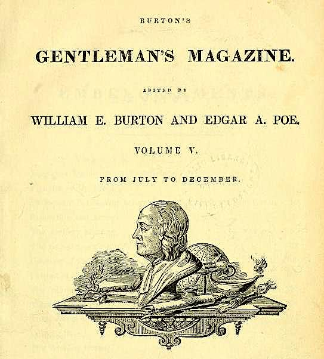
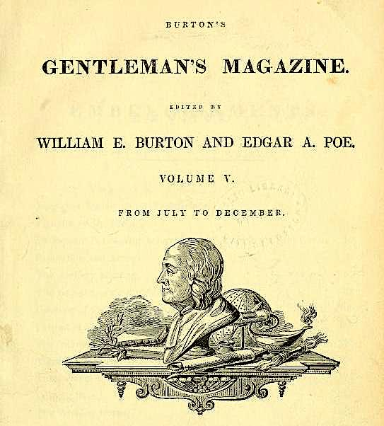

After his brother's death, Poe began more earnest attempts to start his career as a writer, but he chose a difficult time in American publishing to do so.[38] He was one of the first Americans to live by writing alone[2][39] and was hampered by the lack of an international copyright law.[40] American publishers often produced unauthorized copies of British works rather than paying for new work by Americans.[39] The industry was also particularly hurt by the Panic of 1837.[41] There was a booming growth in American periodicals around this time, fueled in part by new technology, but many did not last beyond a few issues.[42] Publishers often refused to pay their writers or paid them much later than they promised,[43] and Poe repeatedly resorted to humiliating pleas for money and other assistance.[44] Poe (then aged 26) obtained a license in 1835 to marry his cousin Virginia Clemm (then aged 13). They were married for 11 years until her death, which may have inspired some of his writing. After his early attempts at poetry, Poe had turned his attention to prose, likely based on John Neal's critiques in The Yankee magazine.[45] He placed a few stories with a Philadelphia publication and began work on his only drama Politian. The Baltimore Saturday Visiter awarded him a prize in October 1833 for his short story "MS. Found in a Bottle".[46] The story brought him to the attention of John P. Kennedy, a Baltimorean of considerable means who helped Poe place some of his stories and introduced him to Thomas W. White, editor of the Southern Literary Messenger in Richmond. Poe became assistant editor of the periodical in August 1835,[47] but White discharged him within a few weeks for being drunk on the job.[48] Poe returned to Baltimore where he obtained a license to marry his cousin Virginia on September 22, 1835, though it is unknown if they were married at that time.[49] He was 26 and she was 13. Poe was reinstated by White after promising good behavior, and he went back to Richmond with Virginia and her mother. He remained at the Messenger until January 1837. During this period, Poe claimed that its circulation increased from 700 to 3,500.[5] He published several poems, book reviews, critiques, and stories in the paper. On May 16, 1836, he and Virginia held a Presbyterian wedding ceremony performed by Amasa Converse at their Richmond boarding house, with a witness falsely attesting Clemm's age as 21.[49][50] Poe's novel The Narrative of Arthur Gordon Pym of Nantucket was published and widely reviewed in 1838.[51] In the summer of 1839, he became assistant editor of Burton's Gentleman's Magazine. He published numerous articles, stories, and reviews, enhancing his reputation as a trenchant critic which he had established at the Messenger. Also in 1839, the collection Tales of the Grotesque and Arabesque was published in two volumes, though he made little money from it and it received mixed reviews.[52] In June 1840, Poe published a prospectus announcing his intentions to start his own journal called The Stylus,[53] although he originally intended to call it The Penn, as it would have been based in Philadelphia. He bought advertising space for his prospectus in the June 6, 1840, issue of Philadelphia's Saturday Evening Post: "Prospectus of the Penn Magazine, a Monthly Literary journal to be edited and published in the city of Philadelphia by Edgar A. Poe."[54] The journal was never produced before Poe's death. Poe left Burton's after about a year and found a position as writer and co-editor at the then-very-successful monthly Graham's Magazine.[55] In the last number of Graham's for 1841, Poe was among the co-signatories to an editorial note of celebration of the tremendous success the magazine had achieved in the past year: "Perhaps the editors of no magazine, either in America or in Europe, ever sat down, at the close of a year, to contemplate the progress of their work with more satisfaction than we do now. Our success has been unexampled, almost incredible. We may assert without fear of contradiction that no periodical ever witnessed the same increase during so short a period."[56] Around this time, Poe attempted to secure a position within the administration of President John Tyler, claiming that he was a member of the Whig Party.[57] He hoped to be appointed to the United States Custom House in Philadelphia with help from President Tyler's son Robert,[58] an acquaintance of Poe's friend Frederick Thomas.[59] Poe failed to show up for a meeting with Thomas to discuss the appointment in mid-September 1842, claiming to have been sick, though Thomas believed that he had been drunk.[60] Poe was promised an appointment, but all positions were filled by others.[61] Cottage in Fordham (The Bronx) where Poe spent his last years One evening in January 1842, Virginia showed the first signs of consumption, or tuberculosis, while singing and playing the piano, which Poe described as breaking a blood vessel in her throat.[62] She only partially recovered, and Poe began to drink more heavily under the stress of her illness. He left Graham's and attempted to find a new position, for a time angling for a government post. He returned to New York where he worked briefly at the Evening Mirror before becoming editor of the Broadway Journal, and later its owner.[63] There Poe alienated himself from other writers by publicly accusing Henry Wadsworth Longfellow of plagiarism, though Longfellow never responded.[64] On January 29, 1845, Poe's poem "The Raven" appeared in the Evening Mirror and became a popular sensation. It made Poe a household name almost instantly,[65] though he was paid only $9 for its publication.[66] It was concurrently published in The American Review: A Whig Journal under the pseudonym "Quarles".[67] The Broadway Journal failed in 1846,[63] and Poe moved to a cottage in Fordham, New York, in the Bronx. That home, now known as the Edgar Allan Poe Cottage, was relocated in later years to a park near the southeast corner of the Grand Concourse and Kingsbridge Road. Nearby, Poe befriended the Jesuits at St. John's College, now Fordham University.[68] Virginia died at the cottage on January 30, 1847.[69] Biographers and critics often suggest that Poe's frequent theme of the "death of a beautiful woman" stems from the repeated loss of women throughout his life, including his wife.[70] Poe was increasingly unstable after his wife's death. He attempted to court poet Sarah Helen Whitman, who lived in Providence, Rhode Island. Their engagement failed, purportedly because of Poe's drinking and erratic behavior. There is also strong evidence that Whitman's mother intervened and did much to derail their relationship.[71] Poe then returned to Richmond and resumed a relationship with his childhood sweetheart Sarah Elmira Royster.